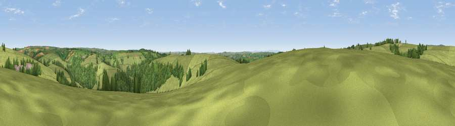

Viewpoint near Dulverton
#19779 in England · top 40% of its area beats it · near DulvertonWhere it is
The exact computed spot (SS 91275 30675). Click the marker for map links.
The view, rendered

A 360° render of this exact spot computed from the terrain model, tree cover and land cover — summer colours, afternoon light, calibrated against photographs of famous viewpoints. Real trees, hedges and buildings will differ in detail.
The panorama
Grey silhouette: terrain skyline in each direction (720 bearings, Earth curvature and refraction included). Dashed green: skyline with trees (+15 m) and buildings (+8 m) as obstacles. Blue strip: how far the ground is visible on each bearing.
Where the view opens
Wedge length = distance to the farthest visible ground on that bearing (vegetation-aware). Rings at 10, 25 and 50 km.
What fills the view
76% grassland · 22% woodland · 2% cropland
Angular shares of the visible panorama (visual magnitude), not map area. Landscape diversity 0.28 (0–1 Shannon).
Key numbers
More beautiful places nearby
The staircase of upgrades: each row has a higher view potential than everything closer. Driving times are estimates from straight-line distance, calibrated against real road routing — check an actual route before setting out.
| Place | Direction | Drive | Score |
|---|---|---|---|
| Viewpoint near Dulverton | S · 1 km | ~3 min | 58.6 |
| Court Down | SSE · 1 km | ~3 min | 63.2 |
| Winsford Hill | NW · 5 km | ~11 min | 66.0 |
| Viewpoint near Skilgate | ESE · 5 km | ~11 min | 72.5 |
| Viewpoint near Luxborough | NNE · 7 km | ~15 min | 73.5 |
| Viewpoint near Luccombe | NNW · 11 km | ~21 min | 84.5 |
| Viewpoint near Luccombe | N · 12 km | ~23 min | 84.6 |
| Viewpoint near Luxborough | NE · 12 km | ~23 min | 85.5 |
51.06508, -3.55300 · source: screening · position refined by local search. Computed location — check access rights before visiting.